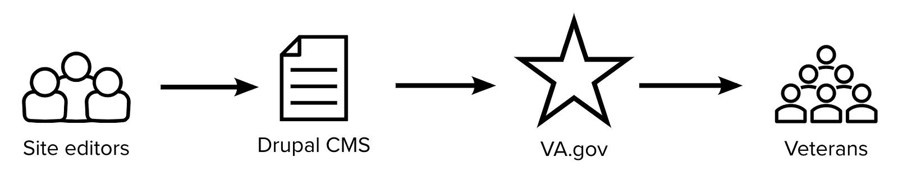
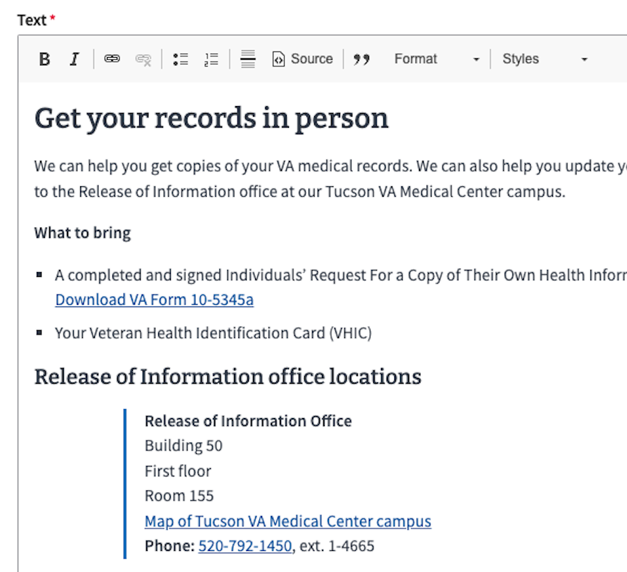
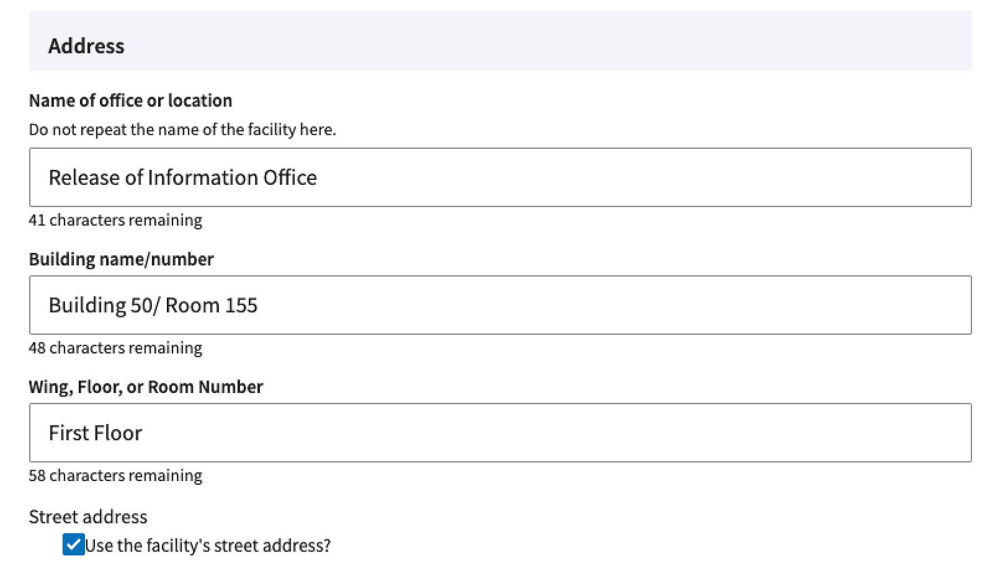
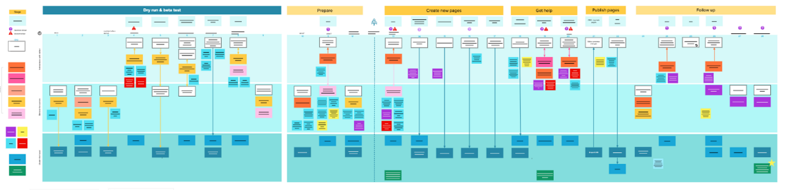
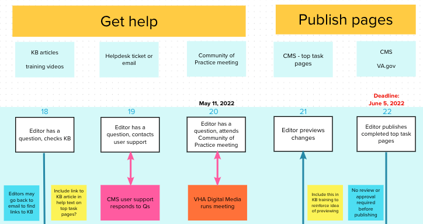
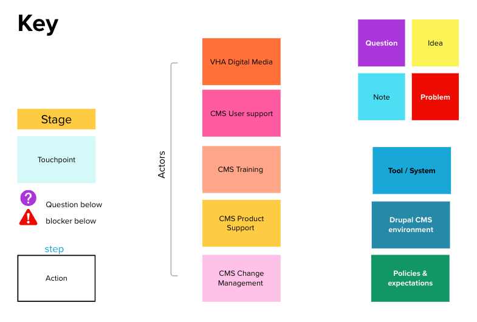
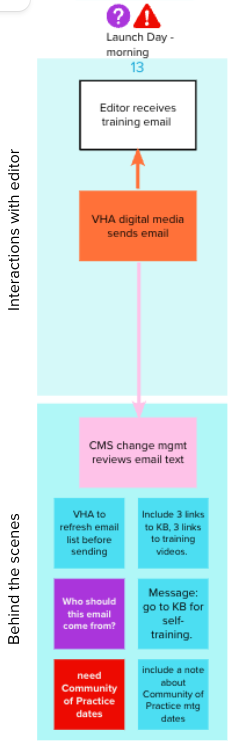
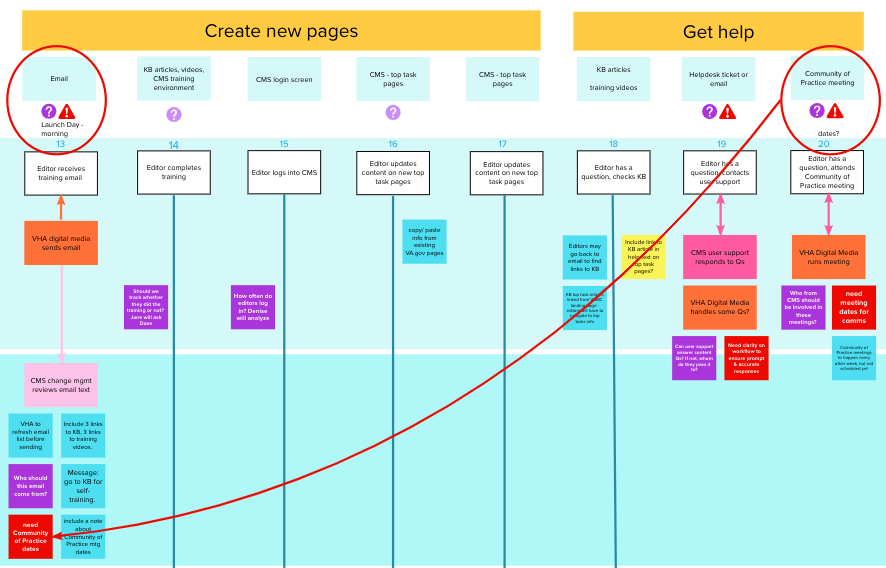
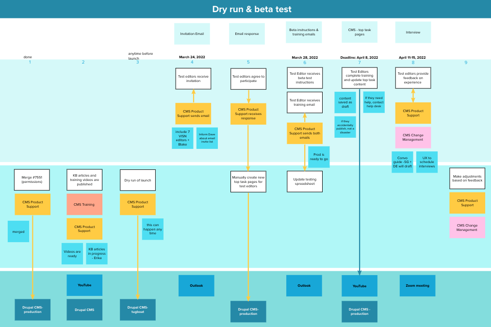

By Suzanne Gray, Senior Content Designer, CivicActions
Why Service Design Matters
Incorporating service design into an internal project can help:
- Ensure a complex process goes smoothly
- Clarify roles and responsibilities
- Identify problems before they happen
- Improve communication among teams
- Demonstrate the value of service design to leadership
What is Service Design?
Service design is a way to understand a complex process. Think about the experience of renewing your driver’s license. It might involve website forms, phone calls, in-person interactions, and a slew of programs and databases behind the scenes. If you wanted to improve that system, how would you start?
Service designers zoom out to understand the system from the user’s point of view. We zoom in to see what’s happening behind the scenes– the tools, staff, processes, and policies that make the service work. (Or not work, as the case may be.)
With this full picture in mind, we create a diagram of the process, called a service blueprint. The service blueprint is a visual representation of all the pieces that make the service work. This diagram helps teams uncover hidden opportunities to improve efficiency and collaboration.
In short, service design engages deeply with the inner workings of an institution in order to create a seamless user experience that saves time, effort, and money for both the agency and the public.
Service Design for an Internal Process
Service design is usually a big-picture endeavor. Take the driver’s license example: it’s a sprawling, multi-channel process with lots of touchpoints and things that can go wrong. Service design is great at tackling complex problems like those.
That’s great, but most digital agencies aren’t designing whole systems or services. We’re brought in to build one specific digital tool. For example at CivicActions, we frequently build content management systems for large government websites. A CMS is not used by the public, but rather by the agency staff who manage website content. So how would service design apply?
Service design can be used to clarify any complex process, even an internal one. We can apply all the principles of service design at a smaller scale.
In the case of a CMS, the humans at the center of our human-centered design are front-line agency staff. They are, in effect, our end users. By understanding their experience, we can make the agency’s internal processes easier and more efficient.
And ultimately, better internal processes result in better outcomes for the public.
Example: Top Tasks CMS Rollout
Here’s an example: CivicActions works with the Department of Veterans Affairs (VA) to build the modernized VA.gov website. As part of that project, we’re always improving the CMS to make it easier for site editors to provide useful content for Veterans.

It’s a big project, with about 400 VA staff managing website content for 141 VA medical centers across the country. Each medical center has multiple facilities– almost 1400 of them in total.
In spring 2022 our team launched a new feature within the CMS: a set of forms for managing “top task” content. Previously, information like the address, phone number, and operating hours for a particular medical office was all lumped together in one rich text field. That made the info prone to data entry errors, inconsistent formatting, and accessibility issues.
The new forms used structured content, where each type of data has its own field. Not only would this improve the accuracy and consistency of information, but it would also allow the information to be reused in multiple places. When a phone number changes, for example, the editor can adjust one field and the correct information will be replicated across the whole site.
Launching this feature was no simple task. It would require the busy editors for all 141 VA Medical centers to manually move facility information out of the rich text fields and into the new forms. How could we get hundreds of site editors to adopt the new forms in a timely manner?


Early Challenges
As a service designer, I saw three challenges for the feature launch:
- Trust: We were working with a new department that had recently taken charge of communications with site editors. As contractors, it was important for our team to build a positive relationship with this department. A lack of clarity about roles and responsibilities could jeopardize our fledgling relationship.
- Blind spots: The engineering and communications teams were planning their work separately. But the process of launching the new forms was complex and required seamless coordination. The risk of missing a step, or doing things in the wrong order, was high.
- User experience: At the start, everyone was focused on what our team needed to do — not on what the site editors needed. How would this task be perceived by the people doing the work? I knew that ultimately, the site editors were the ones responsible for making this content change happen — or not.
The Approach: Service Blueprinting to the Rescue
To address these challenges, I created a service blueprint in Mural. It became the heart of the team’s planning efforts for this complex feature launch.

A service blueprint allows you to consolidate many types of information in one place.
- The top row outlines the phases of the process.
- The white boxes across the top are the actions the site editor will take. This helps the team focus on the user rather than on our internal staff or processes.
- Beneath each action, we detail all of the teams and tools involved in making that step work.
- The top, light blue lane indicates what the editor can see or interact with.
- The middle, medium blue lane is for activities the editor can’t see, like people merging code or creating a training video.
- The bottom, dark blue lane is for things that are under the hood. It includes systems and tools, like Outlook and the Drupal CMS itself. It also includes specific policies and expectations that influence the step.


Let’s look at the specific problems the blueprint helped solve.
Problem 1: Trust
How the blueprint helped
- “Interactions with editor” lane clarified relationships
- Visual markers make mushy areas concrete
For this launch, our team was collaborating with a department that had recently taken charge of communications with site editors. We all agreed right away that email was the best channel to inform the site editors about the new feature. But who would write the emails? Who would send them? There were a lot of options on the table, and no one wanted to commit. These unclear responsibilities across teams risked damaging trust between the development and communications teams.
Enter the blueprint. Having a visual diagram to look at during these discussions made a squishy, semi-political issue very concrete. I would adjust the diagram on the fly during our meetings. It turns out “Where should I put this arrow?” is an effective way to move the conversation forward.
And because the “interactions with editor” were clearly marked in the diagram, everyone felt confident they understood who was doing what. Our team would set the communications team up for success and let them be the face of the message.

Problem 2: Blind Spots
How the blueprint helped
- Blocker icons and red notes revealed dependencies
- Important decision points stayed in view
Our partners wanted to host office hours for editors to ask questions about the new process, but they were disinclined to choose a meeting date that was more than a month away. Office hours wouldn’t happen until step 20 on the blueprint.
Because the blueprint also tracked key messages for each communication, I knew that we needed a firm date much earlier, so that we could include it in an email to editors at step 13.
Thanks to the blueprint, we didn’t have to cajole our partners into choosing a date. They could see the problem clearly. As a result, they picked a date for the meeting well in advance, we included it in the step 13 email, and that was that. No last-minute panic was necessary.
This is just one example of how mapping a process can reveal submerged dependencies and clarify the way teams’ processes affect each other.

Problem 3: User Experience
How the blueprint helped
- Team members could visualize a complex sequence
- Technical and communications processes were visible at the same time
By its very structure, a service blueprint helps teams focus on the user experience: it’s emblazoned across the top of the diagram.
On this project, the blueprint also helped us execute user research in advance of the launch, to make sure that the new features would make sense to site editors. Figuring out the order of operations here was tricky: activating the new code in the wrong order would automatically build new pages for 141 Medical Center sites.
The blueprint gave us a way to coordinate the technical and communications pieces of the beta testing puzzle. We actively rearranged the blueprint during our discussions. Playing around in this way helped us see that we needed to manually build pages for our test editors, which had to happen after editors had agreed to participate.
As a result, we were able to successfully beta test the process with editors, interview them about their experiences, and make improvements based on their feedback.

Outcomes
In the end, the feature launch was uneventful– just the way we like it.
The site editors reported that the communications were clear. They got what they needed, when they needed it, and were able to update their information with a minimum of fuss.
Members of our team reported feeling less stressed and confused throughout the launch planning process because of having the blueprint.
Our new partners appreciated the clarity we brought to the process, and our teams collaborate happily and often.
Perhaps most importantly, our team leaders and partners are more attuned to the site editors’ point of view. The service blueprint, with its focus on editors’ actions rather than internal processes, offered a new way to think about our work.